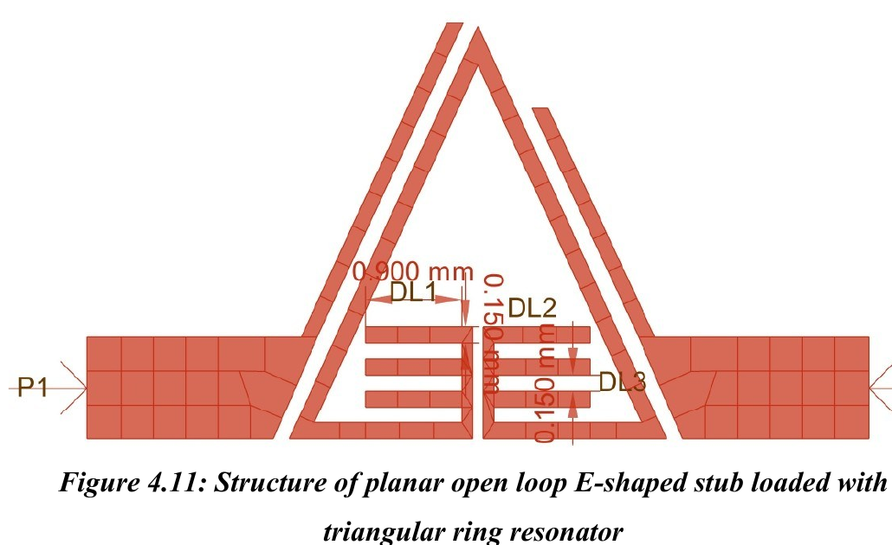
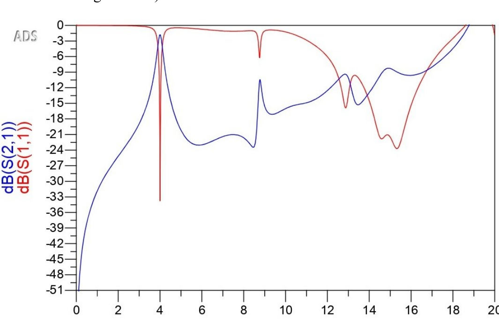
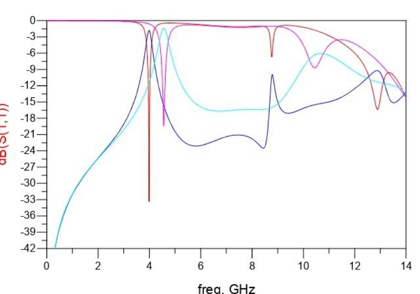

Design objective
The project explores a narrow bandpass filter based on an open-loop triangular ring resonator loaded with E-shaped stubs. The report describes the E-shaped stubs as a way to modify the resonator's effective electrical characteristics and coupling, with the aim of shifting the resonance and improving the simulated S-parameter response.
The proposed structure is planar and is described in the report as avoiding vias and defected ground structures (DGS), keeping the design comparatively straightforward to fabricate.
Design progression
- Start with a conventional triangular ring resonator structure.
- Introduce open-loop coupling and extended stubs to study the resonant response.
- Develop the final planar open-loop structure with coupled E-shaped stubs.
- Compare simulated frequency responses and inspect the first and higher-frequency passbands.
Open-loop E-shaped stub-loaded triangular ring
The final geometry shown in the project report places the E-shaped stub arrangement within the open-loop region of the triangular ring resonator. The report notes that the coupled stubs are intended to introduce additional capacitive effects.

Electromagnetic simulation
The results chapter identifies Keysight ADS 2023 as the simulation environment. The stated substrate is Rogers RT/Duroid 6010, with relative permittivity εr = 10.2, loss tangent tan δ = 0.0023 and substrate thickness of 1.27 mm.
The report discusses S-parameter analysis, particularly S11 (input reflection) and S21 (forward transmission), to evaluate the response of the proposed filter.

Reported simulation observations
- First passband: centre frequency reported at 3.9 GHz, with S21 = −1.8 dB and S11 = −33.8 dB.
- Second passband: the results discussion reports a centre frequency of 12.8 GHz, S21 = −9.3 dB and S11 = −15.88 dB. The conclusion rounds/quotes this as 12.86 GHz.
- Second-band width: the report gives the limits as 12.54 GHz and 13.10 GHz, corresponding to 560 MHz.
- Design comparison: the report states that adding the E-shaped stubs shifts the first resonance towards a lower frequency and improves the first-band return-loss result relative to an earlier iteration.

The report contains inconsistent first-band figures: Chapter 4 lists fH1 = 4.150 GHz, while Chapter 5 lists fH1 = 4.106 GHz. With fL1 = 3.889 GHz, the latter pair gives the stated 217 MHz bandwidth; the former pair gives 261 MHz. The report also states a 5.2% fractional bandwidth, which does not exactly align with 217 MHz at a 3.9 GHz centre frequency. These figures should be checked against the original ADS data before being treated as final.
Further validation
The project report discusses physical implementation requirements, including SMA connectors and vector network analysis. However, the material reviewed here does not establish that a fabricated prototype was measured. This case study therefore describes the documented design and simulation results, not a verified hardware measurement campaign.
Suggested next steps identified in the report include physical fabrication and measurement, further insertion-loss optimisation, miniaturisation, reconfigurable operation and additional passband development.